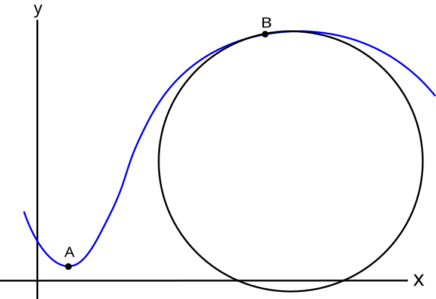

Homework Section 13.3 - Answers
- `10sqrt(5)`
- `int_(-5)^6 sqrt(4 + e^(2t) + 36t^2) dt ~~ 506.407`
-
- `bb(r)(s) = (5s)/sqrt(26) bb(i) + cos(s/sqrt(26)) bb(j) + sin(s/sqrt(26)) bb(k)`
- `bb(r)(s) = << (3s)/sqrt(14), 1 + (2s)/sqrt(14), 4 - s/sqrt(14) >>`
-
- `bb(T)(t) = 1/sqrt(5)(2bb(i) - sin t bb(j) - cos t bb(k))`, `bb(N)(t) = -cos t bb(j) + sin t bb(k)`
- `bb(T)(t) = 1/(e^(2t)+1)(- bb(i) + e^(2t) bb(j) - sqrt(2) e^t bb(k))`, `bb(N)(t) = 1/(e^(2t)+1)(sqrt(2)e^t bb(i) + sqrt(2)e^t bb(j) + (e^(2t)-1) bb(k))`
-
- `kappa(t) = 1/5`
- `kappa(t) = (sqrt(2)e^(2t))/(e^(2t)+1)^2`
- `kappa(t) = (2sqrt(13))/(4t^2 + 13)^(3/2)`
- `kappa = (2sqrt(13))/17^(3/2)` or `kappa = (2sqrt(13))/(17sqrt(17))`
- `kappa(x) = (96x^2)/(1 + (32x^3 - 1)^2)^(3/2)`
-
- Point A
- Answers will vary according to screen window size and units used.
